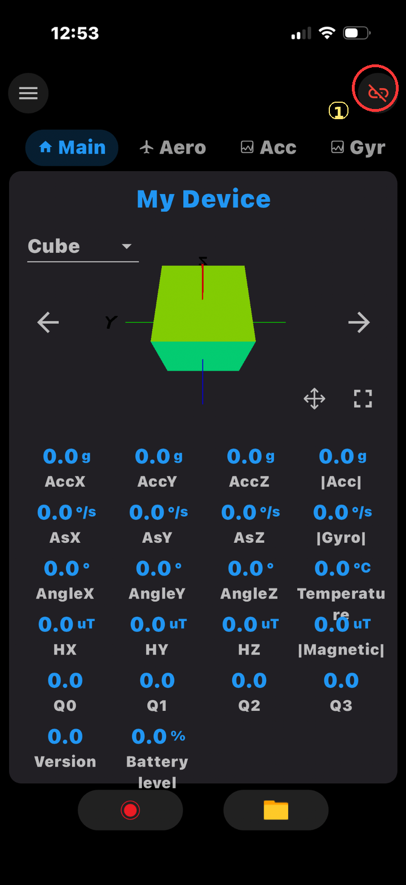
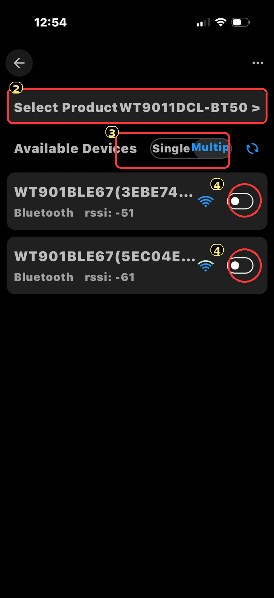
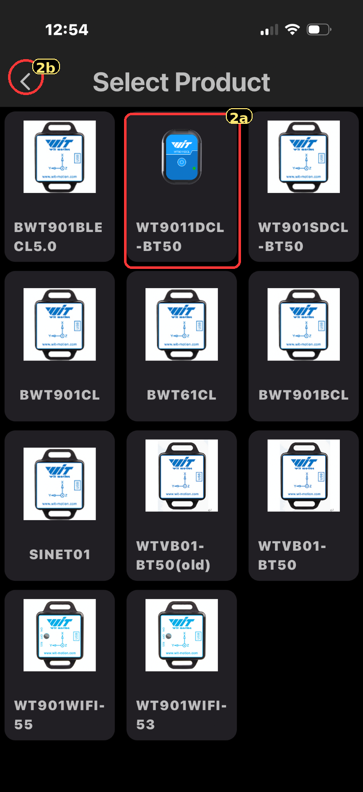
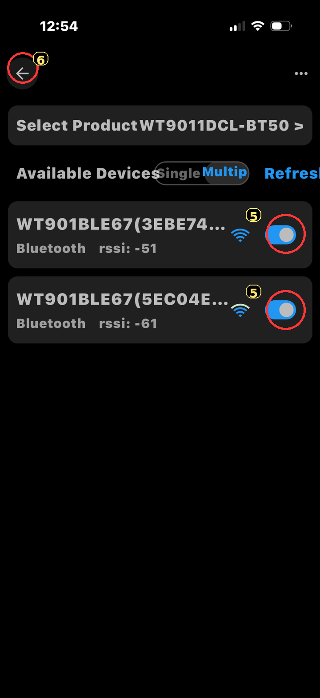
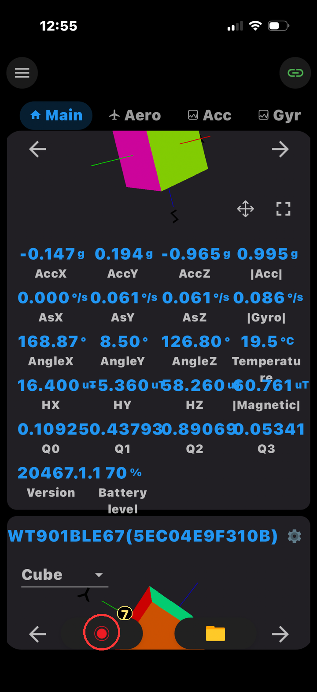
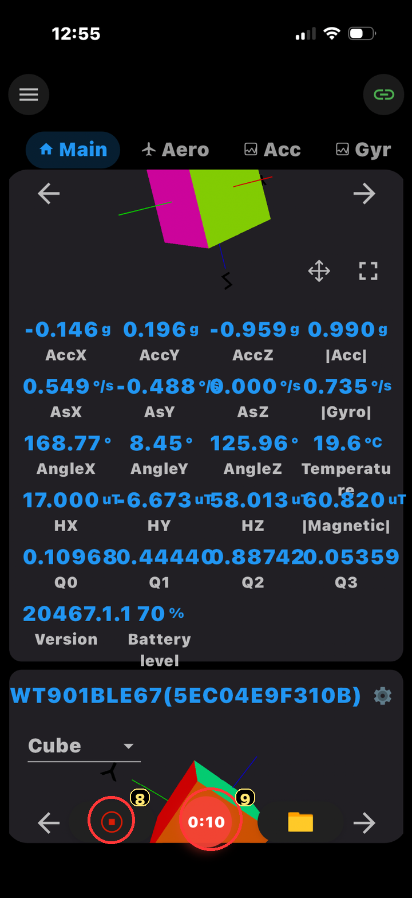
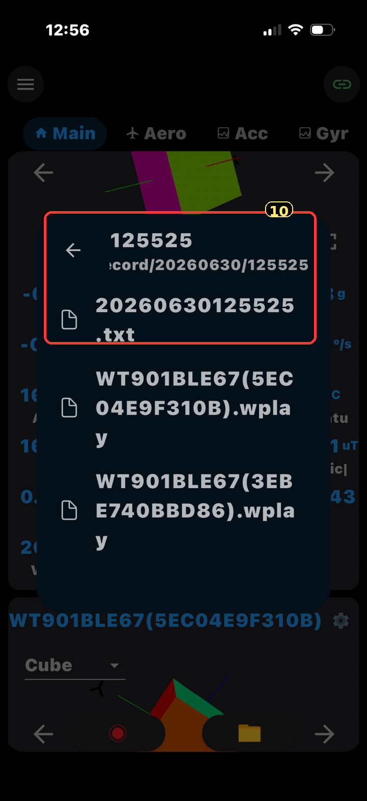
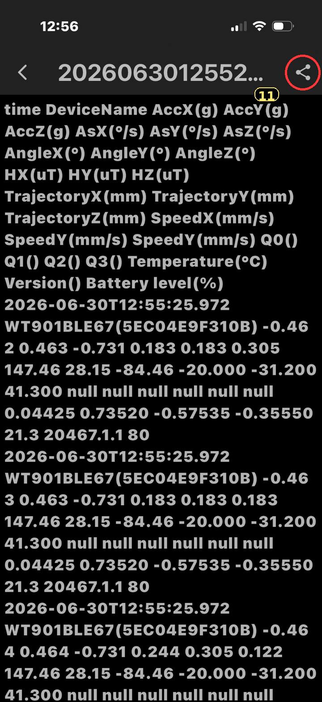

Android Recording with the WitMotion App
RitmoForceCurve currently has an iOS app. Android users can still record data from the WitMotion oar sensors using the WitMotion app. After recording, upload the saved WitMotion text file or zipped recording folder for Cloud Analysis.
Learn about Cloud Analysis Open Cloud Analysis Download WitMotion on Google Play
Before you start
- Turn on phone Bluetooth and approve any Bluetooth/location permissions Android requests.
- Charge and turn on both WitMotion sensors before opening the connection screen.
- Connect sensors inside the WitMotion app, not from the phone’s normal Bluetooth settings.
- Before using the sensors at a busy dock, connect them at home once and note the visible sensor names/addresses. The last 4 characters are usually enough to tell which sensors are yours.
You do not need to memorize which sensor is “shaft” or “sleeve” while pairing in the WitMotion app. The main reason to note the sensor IDs is to avoid accidentally connecting to someone else’s WitMotion sensors when several are nearby.
Screen-to-screen path
Main
Tap the chain/link icon to open the connection screen.
Tap the chain/link icon to open the connection screen.
Available Devices
Confirm the product type, switch to Multip, then connect both of your sensors by name/address.
Confirm the product type, switch to Multip, then connect both of your sensors by name/address.
Select Product
Only use this if the product bar is not already correct. Pick the WitMotion model, then go back.
Only use this if the product bar is not already correct. Pick the WitMotion model, then go back.
Main again
Verify live values, start recording, stop, then open the folder.
Verify live values, start recording, stop, then open the folder.
Connect / pair the sensors
- Start on the Main screen. This is the first screen users should see. Tap the chain/link icon near the top right to open the sensor connection screen.
- Check the product type. On the Available Devices screen, use the Select Product… bar if the displayed model is wrong. In these screenshots, WT9011DCL-BT50 is selected.
- Return from Select Product. After choosing the product, use the back arrow to return to Available Devices.
- Use multiple-sensor mode. Tap Multip if you are recording two sensors.
- Connect your sensors. Tap the switch beside each of your sensor names. If other WitMotion sensors are nearby, compare the visible names/addresses to the last 4 characters you wrote down at home.
- Return to Main. Use the back arrow and confirm live Acc/Gyr/Angle numbers are changing. If both sensor cards are shown, swipe between them and check both before recording.




Start and stop recording
- Verify live data first. On Main, move each sensor slightly and confirm the values change.
- Start recording. Tap the red record circle. Start a few seconds before rowing so the file includes a clean beginning.
- Keep the app active while recording. The timer means recording is running. Avoid disconnecting Bluetooth or force-closing the app during the row.
- Stop recording. Tap the stop square. Then tap the folder icon to open saved recordings.


Find, export, and upload the recording
- Open saved recordings. Tap the folder icon on Main, then open the folder named with the date/time of the row. The date/time naming makes the correct recording fairly easy to identify.
- Use the
.txtfile. The text file contains the data table with time, DeviceName, Acc, Gyro, Angle, magnetic field, quaternion, temperature, version, and battery columns. - Check that both sensors are present. In a two-sensor recording, the DeviceName column should include both of your sensor IDs somewhere in the file.
- Export/share the file from the app. Open the date-named recording folder, select the
.txtfile, and use the share icon to send it to yourself, save it to cloud storage, or move it to the computer used for upload. - Upload to Cloud Analysis. Upload the
.txtfile. If the uploader asks for a zip file, zip the whole timestamped recording folder and upload that zip.

.txt file; the .wplay files are not the main upload file.
Common problems
- No sensors appear: make sure the sensors are on and close to the phone, then tap refresh. Android may also require Bluetooth and location permission for BLE scanning.
- Only one sensor connects: switch to Multip, then turn on both sensor switches again.
- Values are not changing: return to the connection screen and reconnect the sensor before recording.
- Several nearby sensors appear: use the sensor name/address endings you wrote down at home so you only connect to your own sensors.
- Finding the recording: tap the folder icon in the app and use the date/time-named recording folder. Then share the
.txtfile directly from the app.